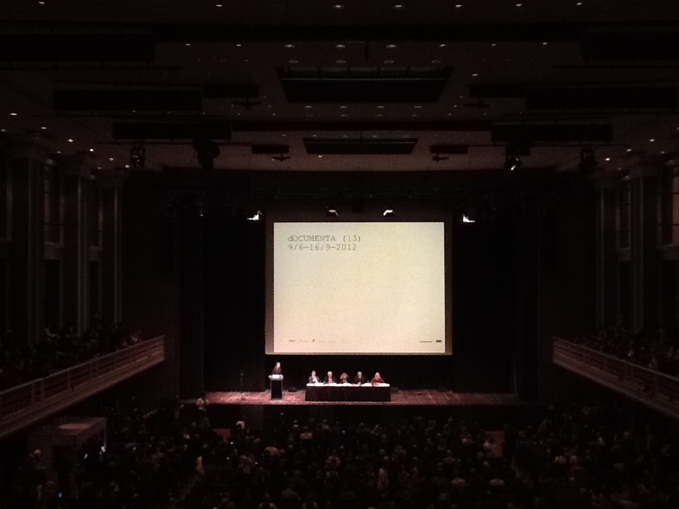

有限艺术项目 Limited Art Porject
关于有限艺术项目
http://yanlei.info/documenta13/
http://yanlei.info/documenta13/
“繪畫就是佔領美術館牆面的東西。”——颜磊 2006年
颜磊LAP计划的初衷希望通过一个更为疏离的方式，让存在于精神层面的艺术得到最大的显现，通过艺术家身体不在场的方式，和艺术家只对即将进入艺术系统制造这一过程的源头——图像，进行最终的判断。
“绘画毕竟是一种无思想的、对一个你可能在一幅照片中可以看到的图像的再现。制作这一画作的过程已经变得多余了。”——颜磊 2007年
LAP是对这一无思想的手工的一次再现，颜磊通过一年的生产，完成了这个项目。而绘画是否如颜磊所说是一个没有思想的“物”？也许在看到这一项目的同时，需要再次追问颜磊作为艺术家为什么要呈现他认为绘画是无思想的，同时为何他要制造如许多的绘画作品？
“严格地说，我并不属于任何媒介所规定的艺术家。从1996年开始我作了一些同当代艺术问题有关的作品，在涉及这个问题的时候，我并没有选择固定的模式和媒介，这同时也是我对传统的表达方式的厌倦和以当代艺术名义标榜的实质，却是对现代主义品位的质疑所导致。”——颜磊 2007年
LAP是一个艺术媒介的呈现，还是一个观念的过程？抑或是一个行进中的艺术项目。在杜尚将现成品带入艺术领域之后，艺术家的位置和不断探索的姿态，构成了当代这一最重要的文化概念。LAP却是对杜尚现成品的一次致敬，不同的是颜磊的生产系统将绘画本身作为现成品，而LAP的将促成这一现成品的观念再次被工业生产的同一化所覆盖。
唯一留下的，就是绘画背面的一行字，还依稀可以判断艺术家的精神存在。
颜磊并非为了追求单色，而使用工业系统，消除艺术画面达成的结果。是否如颜磊所期待的实现完全的距离感，以及艺术家与作品的足够空间？作为对应物的绘画，是否也得到了解放？在全无任何图像的情况下，LAP可以是抽象绘画，单色绘画，也可以借助绘画背面的一句话，获得最大的画面和空间的重生——在人脑中。
李振华
二零一二年四月二十五日
Yan Lei
/ b. 1965 in Hebei (China)
/ lives in Peking / Beijing
Today, we have images constantly at our fingertips, and yet, has something important moved out of reach as a consequence? In Yan Lei’s paradoxically titled installation, Unlimited Art Projects on view in the Documentahalle for dOCUMENTA (13), 360 paintings are arranged around the space. Some hang on walls, some are attached to the ceiling, and others are arranged in storage racks. A number are high-gloss monochromes, while the rest feature source images cropped out of context, set within splashes of vibrant psychedelic color. Where have these source images come from, and why do they make up an increasingly small proportion of the overall landscape during the course of the exhibition?
Responding to various whims while surfing the net, the artist has sourced each image intuitively—perhaps simply because a certain picture caught his eye—pausing for a second in his mass-media search to focus on one, instead of moving on to consume more. To draw out this brief caesura longer, Yan Lei has been picking out one image a day for an entire year (the Chinese calendar is only 360 days long), transferring each to a single canvas. This dairy of sorts is brought to Kassel and mapped throughout the space so as to transform the gallery into a sensuous field of vivacious color. Instead of turning this display into yet another ready-at-hand image bank, however, he has inserted an interruption into the mix. Some of the images have been placed in storage racks, requiring assistance to view, which slows down the audience’s consumption of them. Further folding the idea of duration back into the project, Yan Lei and his team serially remove the source image paintings throughout the run of the exhibition, getting them painted over with a monochrome finish at a car factory near Kassel, and then returning them to the space. As the show continues, each is crossed out, as one would mark a day’s passing on a calendar. In this way, the artist establishes a kind of finitude to his “Unlimited” project, as the source images and their history are sealed up and thus denied for eternity. This final break, which negates the image, reasserts a search for aesthetic reflection and remembrance over a process of easy entertainment. Also implicit within such a gesture is a symbolic protest against doing what is expected.
Adam Kleinman
现场 Exhibition Scene